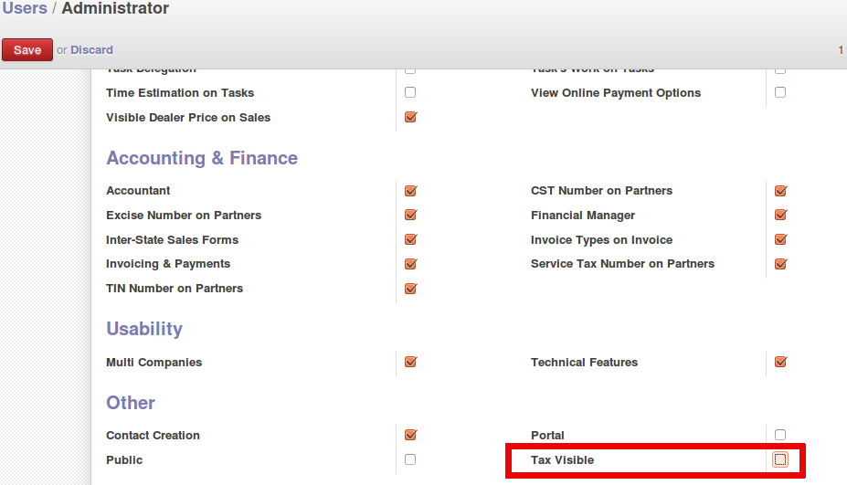
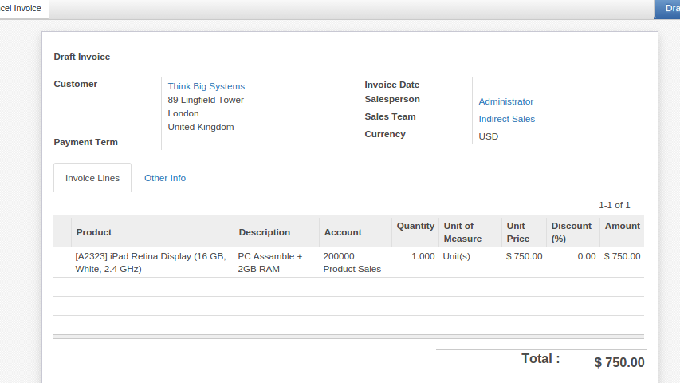

<section class="oe_container">
    <div class="oe_row oe_spaced">
        <h2 class="oe_slogan">Hide Tax From Accounting </h2>
        <div class="oe_span6">
            <p class="oe_mt32">
                Hides tax related fields and menus from accounting
            </p>
            <p>
                This hiding happens in user level. If you check this option hidden things will become visible for that user
            </p>
            <hr>
        </div>
        <div class="oe_row_img oe_centered oe_mt32">
                <hr>
                
        </div>
    </div>
</section>

